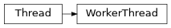

PyPop.GUIApp#
Attributes#
Classes#
Simple event to carry arbitrary result data |
|
A class that represents a thread of control. |
|
Creates the main application window for PyPop. |
Functions#
|
Module Contents#
- ID_ABOUT = 101#
- ID_OPEN_CONFIG = 102#
- ID_OPEN_POP = 103#
- ID_EXIT = 110#
- EVT_RESULT_ID#
- EVT_RESULT(win, func)#
- class ResultEvent(data)#
Bases:
wxPyEventSimple event to carry arbitrary result data
- class WorkerThread(notify_window)#
Bases:
threading.Thread
A class that represents a thread of control.
This class can be safely subclassed in a limited fashion. There are two ways to specify the activity: by passing a callable object to the constructor, or by overriding the run() method in a subclass.
This constructor should always be called with keyword arguments. Arguments are:
group should be None; reserved for future extension when a ThreadGroup class is implemented.
target is the callable object to be invoked by the run() method. Defaults to None, meaning nothing is called.
name is the thread name. By default, a unique name is constructed of the form “Thread-N” where N is a small decimal number.
args is a list or tuple of arguments for the target invocation. Defaults to ().
kwargs is a dictionary of keyword arguments for the target invocation. Defaults to {}.
If a subclass overrides the constructor, it must make sure to invoke the base class constructor (Thread.__init__()) before doing anything else to the thread.
- run()#
Method representing the thread’s activity.
You may override this method in a subclass. The standard run() method invokes the callable object passed to the object’s constructor as the target argument, if any, with sequential and keyword arguments taken from the args and kwargs arguments, respectively.
- abort()#